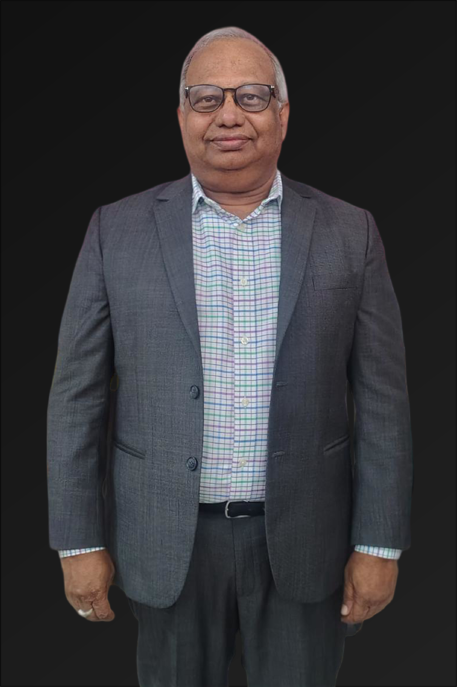

The Chairman

As Chairman of NeuroPi, Mr. Prasad Garapati brings over 45 years of distinguished leadership in technology, manufacturing, entrepreneurship, international business, digital transformation, and innovation-led enterprise development. Throughout his career, he has successfully founded, scaled, and advised numerous technology-driven businesses while actively contributing to India's information technology ecosystem through leadership roles with government, industry associations, and international technology initiatives.
His strategic vision has consistently focused on building globally competitive technology enterprises, strengthening India's digital economy, fostering international collaborations, and accelerating the adoption of emerging technologies across industry. At NeuroPi, he provides strategic leadership, corporate governance, industry partnerships, international outreach, and long-term technology commercialization, ensuring that the NeuroPi Industrial Intelligence Platform (NIIP) evolves as a globally scalable engineering intelligence platform for defence and strategic industries.
Mr. Garapati has spent more than four decades building technology enterprises, promoting innovation, and supporting the growth of India's software and electronics industry. His entrepreneurial journey spans technology, manufacturing, software services, business transformation, agriculture, education, media, and emerging technologies, providing him with extensive experience in organizational leadership, technology commercialization, strategic planning, and international business development.
His ability to transform innovative technologies into commercially viable enterprises provides NeuroPi with strong strategic direction for long-term growth and sustainable technology development.
Mr. Garapati served as Chairman of the Electronics and Computer Software Export Promotion Council (ESC), an autonomous organization sponsored by the Ministry of Commerce & Industry, Government of India, responsible for promoting India's electronics and software exports worldwide.
During his leadership:
His leadership contributed to strengthening India's position as a trusted global technology partner.
Mr. Garapati has extensive experience in developing international technology partnerships across North America, Europe, the Middle East, Africa, and Asia. He has:
His global perspective supports NeuroPi's vision of developing internationally deployable Industrial Intelligence solutions.
Mr. Garapati has actively contributed to government-led technology and economic development initiatives through several strategic advisory positions, including:
These appointments provided extensive experience in technology policy, digital transformation, public-private collaboration, and large-scale technology adoption programmes.
A strong advocate of innovation and entrepreneurship, Mr. Garapati has mentored numerous technology entrepreneurs, startup founders, business leaders, and innovation-driven enterprises. His expertise includes:
This experience enables NeuroPi to combine research excellence with sustainable commercialization.
As Chairman of NeuroPi, Mr. Garapati provides strategic guidance for:
His leadership ensures that the NeuroPi Industrial Intelligence Platform is positioned not merely as a software solution but as a globally scalable Industrial Intelligence platform capable of supporting the digital transformation of strategic industries.
The successful deployment of the AI-Powered Digital Twin Sync System requires more than technical excellence—it demands strategic leadership capable of integrating technology innovation, industrial collaboration, government engagement, and long-term commercialization.
Mr. Prasad Garapati brings over 45 years of leadership across technology, manufacturing, entrepreneurship, international business, and government advisory. His experience in promoting India's software industry through the Electronics and Computer Software Export Promotion Council (ESC), building international technology partnerships, advising government initiatives, and leading technology-driven enterprises provides the strategic vision required to position NeuroPi as a trusted partner for India's defence and shipbuilding ecosystem.
Under his leadership, NeuroPi combines advanced Artificial Intelligence, Digital Twins, Engineering Context, and Reality Intelligence™ with strong corporate governance, international best practices, and long-term innovation strategy. His ability to connect government, industry, academia, and global technology ecosystems ensures that the proposed solution is not only technically robust but also aligned with India's vision of Atmanirbhar Bharat, indigenous defence capability, and next-generation digital shipbuilding.